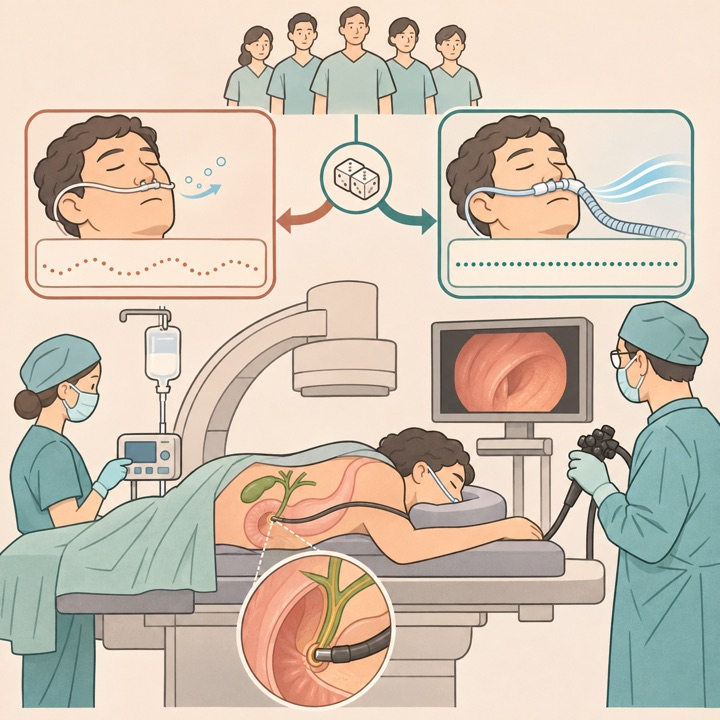
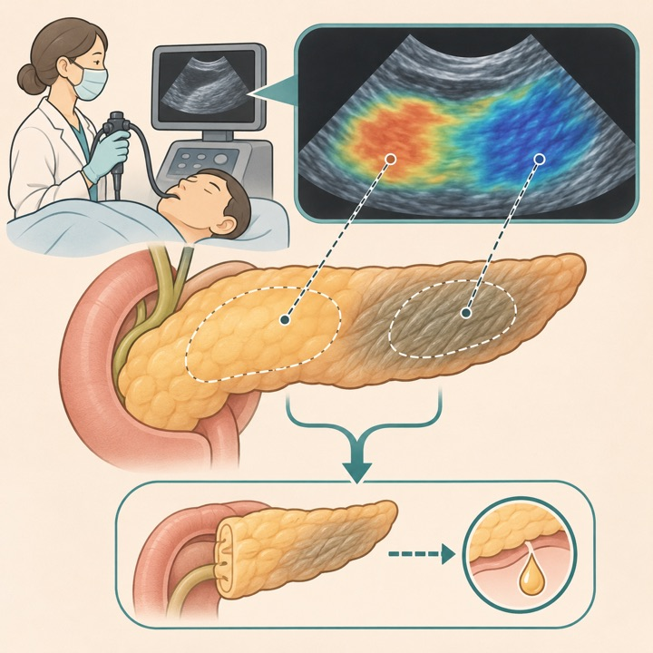
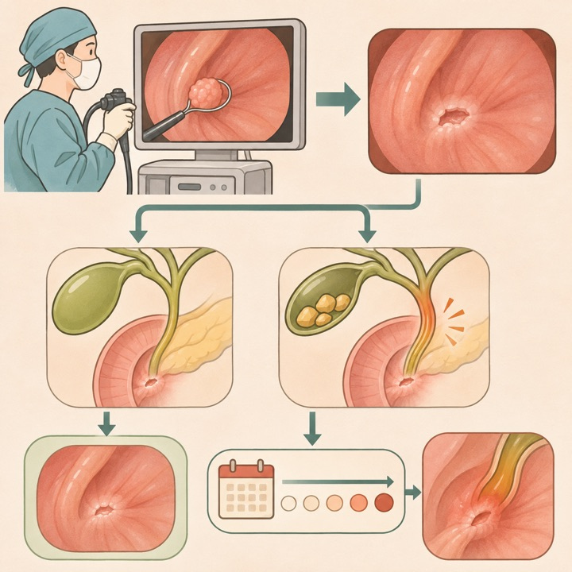
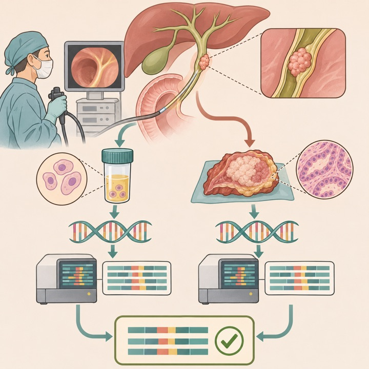
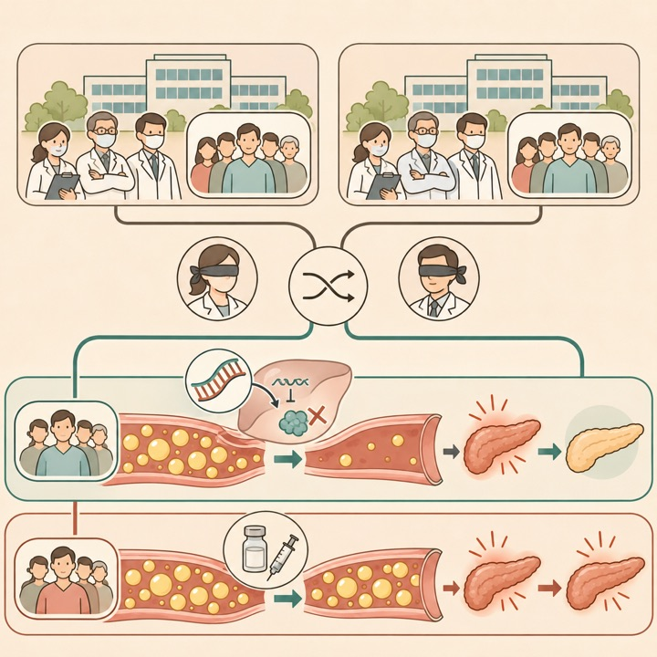
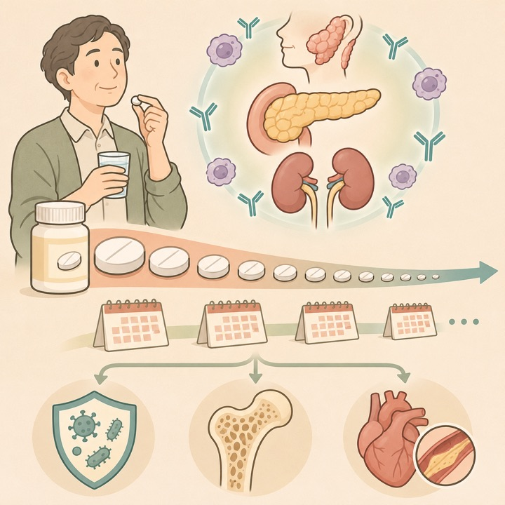
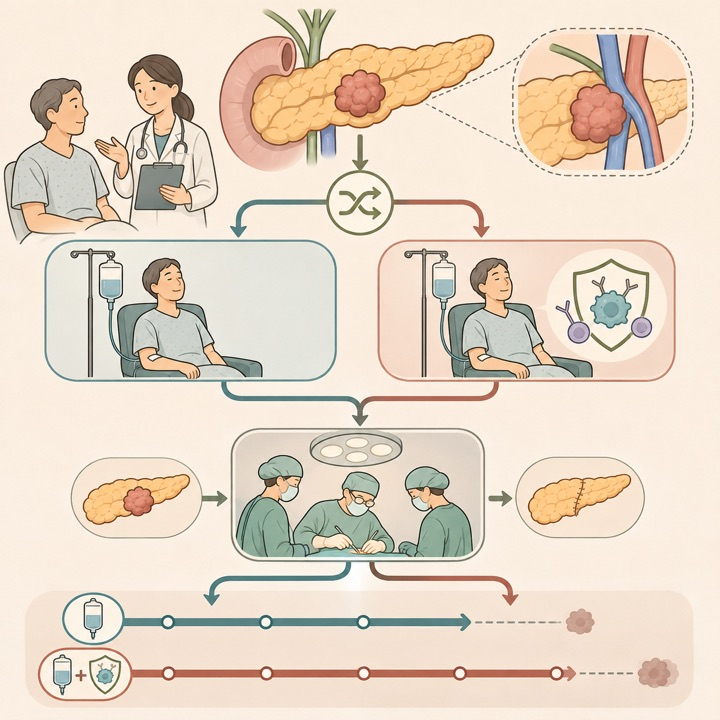
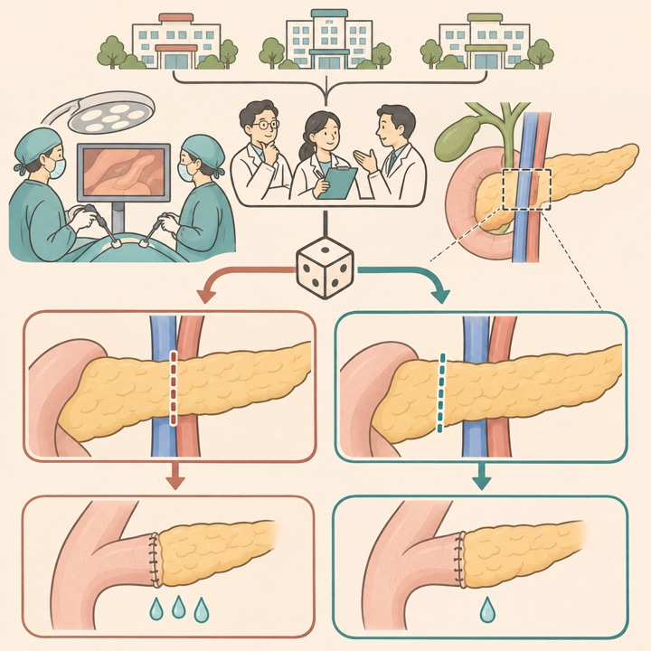
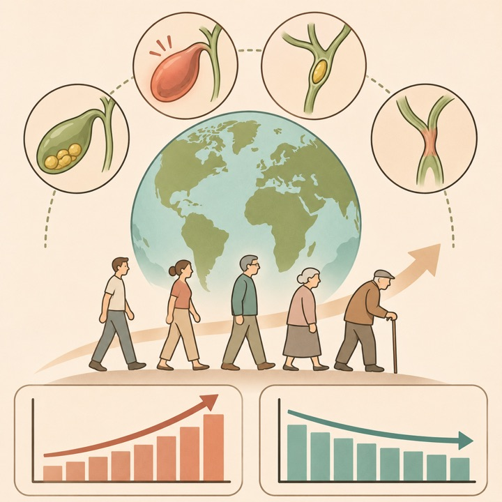

重症高TG血症：plozasiranで急性膵炎を抑制
NEJM / Q1Two phase III RCTs / 757
急性膵炎は1対5件/100人年、rate ratio 0.22。膵炎イベントを示した大規模二重盲検試験です。
Tokai University Pancreatobiliary Group
This Week's Pancreatobiliary Research Highlights
臨床的重要性、研究デザイン、診療への応用可能性を基準に4報を選定しました。IFとJCR quartileは2025年値（2026年公表、判明した最良カテゴリ）を使用し、確実に判定できない場合はQ4としています。
急性膵炎は1対5件/100人年、rate ratio 0.22。膵炎イベントを示した大規模二重盲検試験です。
EFSは11.1対9.6か月、HR 0.74。切除率は同等で、利益はBRPCでより明瞭でした。
低酸素血症は1.3%対14.0%。一過性低血圧増加とのバランスが必要です。
拡大切離でCR-POPFは10.9%対26.0%。高volume施設外での再現性確認が課題です。
日本語: propofolによるnurse-administered sedation下の腹臥位ERCP 300例をHFNC（50 L/min、FiO2 0.50）と標準鼻カニュラへ無作為化しました。低酸素血症は1.3%対14.0%（RR 0.10）、jaw thrustは1.3%対12.0%、鼻咽頭airway挿入は0%対9.3%でした。一方、一過性低血圧は16.7%対8.0%とHFNCで多く、2施設・特定鎮静体制の結果であるため、麻酔管理が異なる環境への一般化には注意が必要です。
English: HFNC markedly reduced hypoxemia and rescue airway maneuvers during prone ERCP under nurse-administered propofol sedation, but transient hypotension was more frequent and broader implementation should reflect local sedation practice.

日本語: 膵頭十二指腸切除予定100例で、術前EUS strain ratio（事前規定cutoff ≤2.5）から術中soft pancreasを予測しました。感度87.9%、特異度83.3%、AUC 0.91で、病理学的線維化とも強く相関しました。CR-POPF予測indexは見かけAUC 0.87からoptimism補正後0.78へ低下し、イベントは16件のみです。膵実質評価の客観化に有望ですが、単施設であり外部検証が必要です。
English: Preoperative EUS strain elastography identified soft pancreatic texture with good diagnostic accuracy and tracked fibrosis, while the exploratory fistula-risk model was event-limited and requires external validation.

日本語: 内視鏡的乳頭切除313例のうち胆嚢温存292例を解析し、胆嚢結石あり54例では晩期有害事象が25.9%、なし238例では10.5%でした。胆嚢結石は初回晩期イベント（aHR 2.97）と胆道イベント（aHR 3.58）に関連し、1年累積発生は23.2%対5.7%でした。後ろ向き単施設研究で、予防的胆嚢摘出の有効性を直接示すものではありません。
English: Concomitant gallstones were associated with substantially more late biliary events after endoscopic papillectomy, supporting risk-based surveillance but not proving benefit from prophylactic cholecystectomy.

日本語: 胆管癌14例の胆汁cell blockと手術検体を比較しました。NGS成功率は64%対86%で有意差なく、両方成功した8例では遺伝子一致率中央値99%、手術検体遺伝子のcoverage中央値100%でした。1枚あたり悪性細胞30個以上を目安にするとcell block成功率は80%でした。症例数が非常に小さく、遺伝子panelや採取条件を含む前向き標準化が必要です。
English: Bile cell-block DNA produced highly concordant NGS results when sequencing succeeded, suggesting a practical option for unresectable cholangiocarcinoma, but feasibility was tested in only 14 paired cases.

Plozasiran for Severe Hypertriglyceridemia and Risk of Pancreatitis；重症高トリグリセリド血症に対するplozasiranと膵炎リスク
日本語: 同一設計のSHASTA-3/4で重症高TG血症757例をplozasiran 25 mgまたはplaceboへ2:1無作為化しました。12か月TG中央値は79%・81%低下し、500 mg/dL未満達成は91%・93%対51%・50%。統合解析の急性膵炎は1対5件/100人年（rate ratio 0.22、P=0.008）で、有害事象は両群73%でした。膵炎は主要評価項目ではなく統合副次解析で、企業資金による試験である点も踏まえて長期・実臨床データを待つ必要があります。
English: APOC3-targeting plozasiran produced profound triglyceride lowering and fewer adjudicated pancreatitis events than placebo across two phase III trials; the pancreatitis analysis was pooled and secondary, so durability and real-world effectiveness remain important.

日本語: IgG4関連疾患で経口glucocorticoidを開始した3,167例を最大4年追跡しました。4年時点でも66.56%が継続し、17.80%は5 mg/日超でした。flareは14.30%、入院感染は7.46/100人年、骨粗鬆症性骨折0.61/100人年、心血管疾患1.61/100人年でした。claims dataのため臓器病変・疾患活動性・因果関係には限界がありますが、長期毒性を減らすsteroid-sparing戦略の必要性を示します。
English: Two thirds of Japanese patients with IgG4-related disease remained on oral glucocorticoids at four years, with clinically meaningful infection and chronic-toxicity burdens that support steroid-sparing research.

日本語: BRPC/LAPC 392例をmFOLFIRINOX＋toripalimabまたはmFOLFIRINOX単独へ無作為化しました。EFS中央値は11.1対9.6か月（HR 0.74）、OSは20.6対17.1か月（HR 0.81、95%CI 0.63–1.03）、奏効率は30.1%対18.9%でした。切除率は42.3%対43.9%で同等、事前規定解析ではBRPCに利益が示唆されLAPCでは明確でありませんでした。単一国・open-label phase IIで、OS未確定のためphase III確認が必要です。
English: Adding toripalimab to modified FOLFIRINOX improved event-free survival and response without increasing major toxicity, but did not increase resection and showed an uncertain overall-survival effect, especially in LAPC.

日本語: LPD予定141例を、SMV-PV軸前方で切離する従来法と、その左縁から5–10 mm外側で切離する拡大法へ無作為化しました。CR-POPFは拡大法10.9%対従来法26.0%（RR 0.42）、感染性合併症も10.9%対26.0%でした。他の周術期合併症差はありません。open-labelで群数が不均衡なmITT解析、高volume 4施設のため、解剖・血流評価を含む再現性検証が必要です。
English: Extended pancreatic neck transection reduced clinically relevant fistula and infectious complications after laparoscopic pancreaticoduodenectomy in four high-volume centers, warranting replication before routine adoption.

日本語: 非悪性胆嚢・胆道疾患の世界有病者数は1990年1.574億人から2023年2.644億人、死亡6.58万から14.67万、DALYs 480万から820万へ増加しました。一方、年齢標準化率は有病3,573.2から2,990.1/10万人、死亡1.95から1.67/10万人、DALYs 111.5から92.3/10万人へ低下しました。高齢化による絶対負担増と医療アクセスの地域差を示しますが、GBDモデル推計であり国別原データ品質に依存します。
English: Absolute gallbladder and biliary disease burden rose sharply through 2023 despite declining age-standardized rates, emphasizing ageing, surgical capacity, prevention, and large geographic inequities.

2026年11月2日〜11月8日にClinicalTrials.govへ初回公開または更新された研究を公式APIで確認し、胆膵疾患・胆膵内視鏡・肝移植に直接関連するものを選択しました。糖尿病用人工膵臓、cystic fibrosis、無関係なEUS/IgG4略語、胆膵を一部含むだけの広範な固形癌研究は除外しました。JRCTは検索していません。
| 新規｜転移性PDAC | NCT07920731 nimotuzumab＋NALIRIFOX一次治療 2026-11-06公開 / 第II相 / 45例 / Enrolling by invitation。 |
|---|---|
| 新規｜RAS変異BTC | NCT07908550 daraxonrasib（アジア集団） 2026-11-02公開 / 第II相 / 55例 / Not yet recruiting。 |
| 新規｜ERCP鎮静 | NCT07922291 BIS-guided propofol sedation 2026-11-06公開 / 100例 / Not yet recruiting。 |
| 新規｜生体肝ドナー | NCT07922720 carnitine complexによる肝脂肪化改善 2026-11-06公開 / 40例 / Not yet recruiting。 |
| 新規｜NET肝転移 | NCT07913113 肝移植対従来治療 2026-11-03公開 / 観察研究 / 100例 / Enrolling by invitation。 |
| 新規｜十二指腸乳頭腫瘍 | NCT07915726 内視鏡的乳頭切除対外科手術 2026-11-04公開 / 前向き多施設cohort / 306例 / Not yet recruiting。 |
| 新規｜切除後BTC | NCT07916844 肝動注化学療法対capecitabine補助療法 2026-11-04公開 / 第III相 / 90例 / Not yet recruiting。 |
| 新規｜KRAS阻害 | NCT07912593 ETX-929、PDACを含む進行固形癌 2026-11-03公開 / 第I/II相 / 320例 / Recruiting。 |
| 新規｜BTC screening | NCT07911397 非造影CTによるAI支援スクリーニング 2026-11-02公開 / 10,000例 / Not yet recruiting。 |
| 新規｜FRα陽性PDAC | NCT07909356 MC001 2026-11-02公開 / 第I相 / 40例 / Not yet recruiting。 |
| 新規｜膵嚢胞EUS-AI | NCT07919704 EUS画像＋臨床情報による嚢胞鑑別 2026-11-05公開 / 観察研究 / 400例 / Not yet recruiting。 |
| 新規｜小児肝移植 | NCT07918183 / HOPESPLIT HOPE下ex-vivo splitting 2026-11-05公開 / 200例 / Not yet recruiting。 |
| 新規｜PDAC術後再発 | NCT07910383 CEUSによる局所再発評価 2026-11-02公開 / 10例 / Recruiting。 |
| 新規｜切除不能eCCA | NCT07916870 photodynamic therapy＋放射性粒子搭載胆道stent 2026-11-04公開 / 30例 / Recruiting。 |
| 更新｜転移性PDAC | NCT06608927 quemliclustat＋化学療法対placebo＋化学療法 2026-11-02更新 / 第III相 / 610例 / Active, not recruiting。 |
| 更新｜切除後BRCA/PALB2 PDAC | NCT04858334 / APOLLO olaparib対placebo 2026-11-05更新 / 第II相 / 152例 / Recruiting。 |
| 更新｜転移性PDAC | NCT07562152 atebimetinib＋GnP一次治療 2026-11-06更新 / 第III相 / 570例 / Recruiting。 |
| 更新｜KRAS G12D PDAC | NCT07805954 zoldonrasib＋daraxonrasib対GnP 2026-11-06更新 / 第III相 / 400例 / Recruiting。 |
| 更新｜膵瘻予防 | NCT06807437 術前lanreotide対placebo 2026-11-06更新 / 第III相 / 274例 / Recruiting。 |
| 更新｜膵外科prehabilitation | NCT06069297 膵・乳頭部腫瘍の術前介入 2026-11-04更新 / 238例 / Active, not recruiting。 |
| 更新｜BTC | NCT05506943 / COMPANION-002 CTX-009＋paclitaxel 2026-11-06更新 / 第II相 / 168例 / Active, not recruiting。 |
| 更新｜機械灌流肝移植 | NCT07585890 欧州10,000例outcome reference framework 2026-11-03更新 / 10,000例 / Recruiting。 |
| 更新｜肝保存 | NCT07899853 in-situ対ex-situ preservation 2026-11-03更新 / 752例 / Recruiting。 |
| 更新｜EUS-RFA PDAC | NCT05723107 EUS-guided RFA 2026-11-06更新 / 第I相 / 6例 / Terminated。 |
| 更新｜PDAC治療 | NCT05685602 CA-4948＋標準化学療法 2026-11-03更新 / 第I相 / 43例 / Suspended。 |
| 更新｜mesothelin固形癌 | NCT06756035 CT-95、PDAC/CCAを含む 2026-11-05更新 / 第I相 / 19例 / Terminated。 |
| 更新｜BTC | NCT05065957 D07001＋capecitabine/S-1 2026-11-04更新 / 第II相 / 19例 / Terminated。 |
| 更新｜二次治療PDAC | NCT04752696 onvansertib＋nal-IRI/5-FU/LV 2026-11-04更新 / 第II相 / 41例 / Terminated。 |
PubMedの2026年11月2日〜11月8日EDAT/新着索引に加え、Nature Reviews Gastroenterology & Hepatology、The Lancet Gastroenterology & Hepatology、Gastroenterology、Gut、Clinical Gastroenterology and Hepatology、Annals of Surgery、Journal of Hepato-Biliary-Pancreatic Sciences、Gastrointestinal Endoscopy、Endoscopy、Surgical Endoscopy、Endoscopy International Open、VideoGIE、Clinical Endoscopy、Digestive Endoscopy、DEN Open、iGIEの公式最新掲載・アーカイブページと、選定論文の出版社ページまたはDOI/PubMedを確認しました。アクセス制限のあるページは公式DOIとPubMed索引を突合しています。IFは2025 Journal Impact Factorを優先し、quartileを確実に確認できない誌は依頼方針に従いQ4と表示しています。速報・ahead of printの情報は更新されることがあります。
2026年10月26日〜11月1日版
2026年10月19日〜10月25日版
2026年10月12日〜10月18日版
2026年10月5日〜10月11日版
2026年9月28日〜10月4日版
2026年9月21日〜9月27日版
2026年9月14日〜9月20日版
2026年9月9日〜9月15日版
2026年8月31日〜9月6日版
2026年8月24日〜8月30日版
2026年8月17日〜8月23日版
2026年8月10日〜8月16日版
2026年8月3日〜8月9日版
2026年7月27日〜8月2日版
2026年7月20日〜7月26日版
2026年7月13日〜7月19日版
2026年7月6日〜7月12日版
医療従事者向け情報： 本ページは医師・医学生・研究者向けの文献整理であり、患者向け広告、診療ガイドライン、個別の診断・治療助言ではありません。掲載内容は公開時点の情報に基づき、原著論文・最新ガイドライン・各施設の方針をご確認ください。